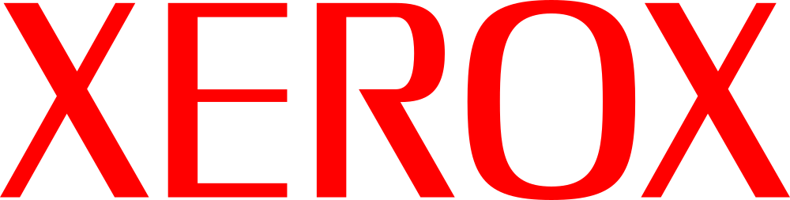
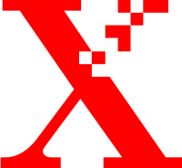

제록스 XEROX
제록스(Xerox)는 1906년 미국에서 창립해 제로그래피 기반 복사기로 사무 문서 산업을 개척한 문서장비 기업이다.
최종 업데이트

제록스는 어떤 브랜드인가
제록스는 1906년 미국 뉴욕 로체스터에서 사진 인화지 제조사 핼로이드(Haloid Company)로 출발했다. 물리학자이자 변리사였던 체스터 칼슨(Chester Carlson)이 1938년 마른 방식의 복사 기술 '제로그래피(xerography)'를 발명했고, 핼로이드는 1947년 그 상업권을 확보했다.
1959년 평범한 종이에 복사하는 914 복사기를 선보이며 사무 환경을 바꾼 전환점을 만들었고, 1970년 설립한 팰로앨토 연구소(PARC)에서 현대 컴퓨팅의 토대를 다졌다. 사명은 1961년 제록스 코퍼레이션으로 바뀌었다.
현재 본사는 코네티컷주 노워크에 있으며 연매출은 약 62억 달러 규모다.
제록스는 어떻게 봐야 할까
제록스의 정체성은 '복사'를 동사로 만든 기술 선점에 있다. 캐논·HP가 가정·소형 사무 시장에서 가격과 물량으로 경쟁할 때, 제록스는 대형 기업과 공공기관을 겨냥한 고속·대용량 복합기와 관리형 인쇄 서비스(MPS)로 차별화해 왔다.
이 브랜드를 이해하는 핵심은 PARC의 역설이다. 그래픽 사용자 인터페이스(GUI), 마우스, 이더넷, 레이저 프린터를 이곳에서 먼저 구현했지만, 1979년 PARC를 방문한 스티브 잡스가 그 개념을 애플 리사·매킨토시로 상용화하며 과실은 애플과 마이크로소프트가 가져갔다.
발명과 사업화는 다른 역량임을 보여준 대표 사례다. 최근에는 인쇄 시장 축소에 대응해 2025년 7월 렉스마크(Lexmark)를 약 15억 달러에 인수, 관리형 인쇄 1위 입지를 굳히고 IT·디지털 서비스로 무게중심을 옮기고 있다.
한국 시장에서도 제록스는 사무용 복사기·복합기의 대명사로 각인되어 있어, 종이에서 소프트웨어로의 전환이 브랜드 인식을 어떻게 갱신할지가 관전 포인트다.
제록스는 어떻게 시작되고 성장했나
핼로이드 포토그래픽 컴퍼니는 1906년 4월 18일 뉴욕 로체스터에서 설립돼 같은 지역의 이스트만 코닥과 경쟁했다. 시애틀 출신의 체스터 칼슨은 1938년 정전기와 빛, 가루 토너를 이용해 마른 복사물을 얻는 전자사진 기술을 발명했고, 1948년 10월 22일 핼로이드가 이를 '제로그래피'라는 이름으로 공개했다.
1949년 첫 상용 복사기 제록스 모델 A를 출시했으나 조작이 번거로웠다. 결정적 전환점은 1959년 9월 16일 뉴욕에서 공개한 914 복사기였다.
원고를 유리판에 올리고 버튼만 누르면 보통 종이에 복사물이 나오는 이 기계는 폭발적으로 팔리며 회사를 거대 기업으로 키웠다. 두 번째 전환점은 1970년 설립한 팰로앨토 연구소(PARC)다.
이곳에서 알토(Alto) 워크스테이션, GUI, 마우스, 이더넷, 레이저 프린터가 탄생했다. 사명은 1958년 핼로이드 제록스를 거쳐 1961년 제록스 코퍼레이션으로 확정됐고, 이후 후지제록스 합작 등으로 국제 사업을 넓혔다.
제록스의 브랜드 아이덴티티는 무엇인가
제록스의 가치관은 '혁신을 통한 업무 방식의 전환'에 뿌리를 둔다. 시각 정체성의 핵심은 빨강과 흰색이다.
40년간 큰 변화가 없던 로고는 2008년 1월 7일 인터브랜드가 주도한 개편으로 소문자 빨강 로고타입과 구체 위에 선으로 그린 X 심벌로 바뀌었다. 이 'X'는 고객·파트너·산업·혁신을 잇는 연결을 상징하며, 사진·문서 기업에서 정보기술 기업으로의 전환을 시각화했다.
주요 타깃은 일반 소비자가 아니라 대기업·공공기관·중견 사무 조직이며, 브랜드 보이스는 신뢰성과 생산성, 기술 리더십을 강조하는 전문적이고 차분한 어조를 띤다.
제록스의 대표 제품과 서비스는 무엇인가
제품군은 사무용 단일·복합기, 대형 기업용 복합기, 그리고 관리형 인쇄·문서 서비스로 구성된다. 시그니처 라인은 중소 사무 환경을 겨냥한 버사링크(VersaLink)와 대용량 기업 환경을 위한 바닥 설치형 알타링크(AltaLink)다.
두 라인 모두 커넥트키(ConnectKey) 기반의 클라우드 연동과 워크플로 자동화를 지원한다. 유통은 직접 영업과 파트너·딜러망을 통한 B2B 중심이며, 가격대는 소형 데스크톱부터 고가의 엔터프라이즈 복합기까지 폭넓다.
최근에는 IT 솔루션과 디지털 서비스 비중을 빠르게 늘리고 있다.
제록스는 지금 어떤 상태인가
본사는 미국 코네티컷주 노워크(401 메릿 7)에 있다. 연매출은 약 62억 달러 규모이며, 2025년 2분기 매출은 약 15억 8천만 달러였다.
2025년 7월 렉스마크를 약 15억 달러에 인수해 관리형 인쇄 서비스 1위 지위를 강화했다. 전체 임직원 수는 미공개.
제록스 연혁 — 주요 사건은 언제였나
제록스 로고는 어떻게 변해왔나
대표 로고대표 브랜드 마크
BI/CI 아카이브보관 이미지 2
BI/CI 아카이브 3보관 이미지 3자주 묻는 질문
제록스는 어느 나라 브랜드인가요?
제록스는 미국의 기술·전자 브랜드입니다.
제록스는 언제 설립되었나요?
제록스는 1906년 설립되었습니다.
제록스의 브랜드 아이덴티티는 무엇인가요?
제록스의 가치관은 '혁신을 통한 업무 방식의 전환'에 뿌리를 둔다.
제록스의 대표 제품은 무엇인가요?
제품군은 사무용 단일·복합기, 대형 기업용 복합기, 그리고 관리형 인쇄·문서 서비스로 구성된다.
제록스의 본사는 어디에 있나요?
본사는 미국 코네티컷주 노워크(401 메릿 7)에 있다.
제록스의 창업자는 누구인가요?
제록스의 창업자는 Joseph C. Wilson입니다(위키데이터 기준).
제록스의 공식 웹사이트는 어디인가요?
제록스의 공식 웹사이트는 https://www.xerox.com/ 입니다.
출처와 검증
제록스 관련 참고: 공식 웹사이트 · 위키데이터 Q152433 · 한국어 위키백과 · 영어 위키백과. 브랜드명은 한글과 원어를 함께 표기하되 데이터에 없는 표기는 만들지 않습니다. 기원 국가·설립연도는 검수된 정의문에서 확인된 값을 우선하고, 없을 때만 공식 웹사이트 URL이 일치하는 위키데이터 개체의 값을 씁니다. 위키데이터 값은 2026-09-07 기준입니다.